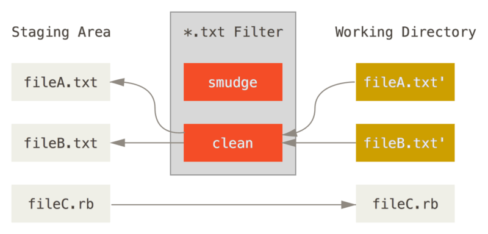
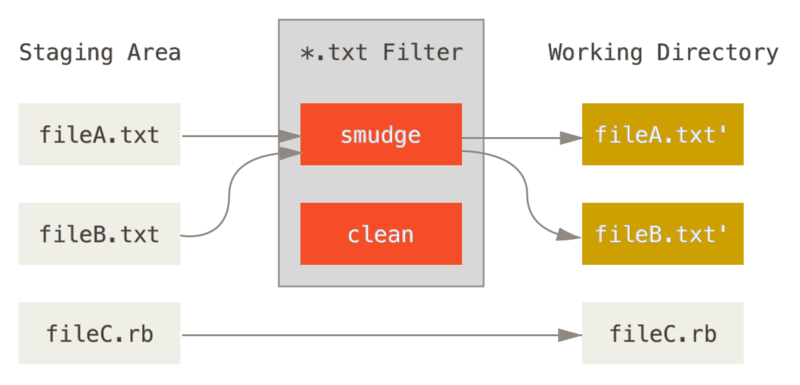

Encrypted blobs in Git and Mercurial
Git and Mercurial started their lives in the mid 2000 bringing the growing popularity DVCS concept to people. Both of them use similar techniques to gain the same results and offer very similar features. One of such features is bidirectional filtering applied to files once they get checked out and committed in (or staged to the index) from and to the repository respectively. The filters can be used in many ways, like SVN-like keyword expansion or auto-formatting.
And one of the most interesting filters is an ecrypting/decrypting filter making the repository a grey box data container. Unfortunately I still have no idea how to make it stop revealing the filenames, and not sure if it's possible to hide directory and filenames.
Git
Git provides a special set of settings, named attributes, that can be used to fine-tune a particular repository.


Here is an example .gitattributes:
*.* filter=crypt .gitattributes filter=
The two lines above are very simple:
-
*.* filter=crypt- apply thecryptfilter to all files -
.gitattributes filter=- but just don't apply the filter to the.gitattributesfile, or the file would be encrypted hence blocking the filters
Now let's define the crypt filter in local .git/config:
[filter "crypt"] clean = openssl enc -e -aes256 -k PASSWORD smudge = openssl enc -d -aes256 -k PASSWORD
where PASSWORD is your password in plain text.
Mercurial
Mercurial provides a very similar feature, however its use seems to be discouraged.
Mercurial [encode] is an equivalent to Git clean, and [decode] is equivalent to Git smudge respectively.
Linux
Example .hg/hgrc:
[encode] ** = pipe: openssl enc -e -salt -aes256 -k PASSWORD **.* = pipe: openssl enc -e -salt -aes256 -k PASSWORD [decode] ** = pipe: openssl enc -d -salt -aes256 -k PASSWORD **.* = pipe: openssl enc -d -aes256 -k PASSWORD
Windows
Mercurial documentation recommends not to use the pipe: mechanism for Windows:
The tempfile mechanism is recommended for Windows systems, where the standard shell I/O redirection operators often have strange effects. In particular, if you are doing line ending conversion on Windows using the popular
dos2unixandunix2dosprograms, you must use the tempfile mechanism, as using pipes will corrupt the contents of your files.
So we're going to use temporary files:
[encode] ** = tempfile: openssl enc -e -salt -aes256 -k PASSWORD -in INFILE -out OUTFILE **.* = tempfile: openssl enc -e -salt -aes256 -k PASSWORD -in INFILE -out OUTFILE [decode] ** = tempfile: openssl enc -d -aes256 -k PASSWORD -in INFILE -out OUTFILE **.* = tempfile: openssl enc -d -aes256 -k PASSWORD -in INFILE -out OUTFILE
Note that ** and **.* mean filenames with extensions and without extensions respectively.
Important notes
I would not recommend to encrypt/decrypt files in Mercurial or Git repositories using filters, at least because of the following flaws.
Some files may have status reporting files as modified
For whatever reason, on Windows, probing the working copy status may report some files as changed regardless the real content change. This issue seems to be reproducible for both Git and Mercurial, and I don't know if there is a way to get rid of "spoiled" file statuses. Maybe this issue is caused by some file metadata, but even committing such files won't make the unchanged after the commit.
Use git mv and hg mv to move files
Both Git and Mercurial seem not to track manually moved files when the files are modified dramatically using such filters. Still have to re-check it, but I have something in my memory reminding me file move issues for such repositories.
Inefficient storage
Since the almost any encrypted files look like true binary files, storing encrypted files cannot be recommended as a sufficient solution. Any file update would dramatically change the file binary representation, and this would mean that a file would be stored probably without delta. I'm not really sure about this exactly, but this is would probably work like that. However, if you prefer to encrypt a few short files only, I should not make a big impact.
Forever password
Another flaw is that the password should be constant for all the repo life time.
If you change the password and update the working copy across different revisions with old passwords, the decrypted files will be broken in Mercurial because .hgrc is not updated unlike Git .gitattributes.
So such repositories are extremely password-sensitive anyway.
Accidental submitting an encrypted file requires history rewriting to encrypt it
Another annoying thing is when one submits a plain file to a repository with encrypted files but having no filters configured.
At least the history rewriting hell would begin if the accidentally committed file is supposed to be encrypted and matches filters filename patterns due to potential clashing.
Quick git reset --soft HEAD~1 and hg strip -r tip --keep would allow to make another commit and save the situation.
Conclusion
Git and Mercurial filtering may do great things, at least the ones described in Git online documentation, but encryption/decryption should be probably automated in other way, not with Git or Mercurial facilities.